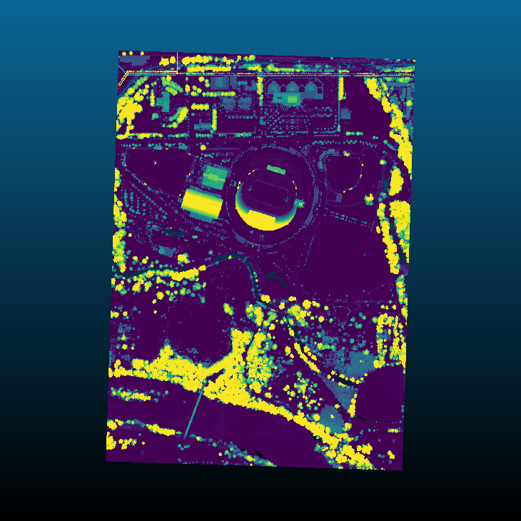

filters.hag_nn¶
The Height Above Ground Nearest Neighbor filter takes as input a point
cloud with Classification set to 2 for ground points. It creates a new
dimension, HeightAboveGround, that contains the normalized height values.
Note
We expect ground returns to have the classification value of 2 in keeping with the ASPRS Standard LIDAR Point Classes.
Ground points may be generated by filters.pmf or filters.smrf, but you can use any method you choose, as long as the ground returns are marked.
Normalized heights are a commonly used attribute of point cloud data. This can also be referred to as height above ground (HAG) or above ground level (AGL) heights. In the end, it is simply a measure of a point’s relative height as opposed to its raw elevation value.
The filter finds the count ground points nearest the non-ground point under
consideration. It calculates an average ground height weighted by the distance
of each ground point from the non-ground point. The HeightAboveGround is
the difference between the Z value of the non-ground point and the
interpolated ground height.
Example #1¶
Using the autzen dataset (here shown colored by elevation), which already has points classified as ground

we execute the following pipeline
[
"autzen.laz",
{
"type":"filters.hag_nn"
},
{
"type":"writers.laz",
"filename":"autzen_hag_nn.laz",
"extra_dims":"HeightAboveGround=float32"
}
]
which is equivalent to the pdal translate command
$ pdal translate autzen.laz autzen_hag_nn.laz hag_nn \
--writers.las.extra_dims="HeightAboveGround=float32"
In either case, the result, when colored by the normalized height instead of elevation is
{kind=link}
Example #2¶
In the previous example, we chose to write HeightAboveGround using the
extra_dims option of writers.las. If you’d instead like to overwrite
your Z values, then follow the height filter with filters.ferry as shown
[
"autzen.laz",
{
"type":"filters.hag_nn"
},
{
"type":"filters.ferry",
"dimensions":"HeightAboveGround=>Z"
},
"autzen-height-as-Z.laz"
]
Example #3¶
If you don’t yet have points classified as ground, start with filters.pmf or filters.smrf to label ground returns, as shown
[
"autzen.laz",
{
"type":"filters.smrf"
},
{
"type":"filters.hag_nn"
},
{
"type":"filters.ferry",
"dimensions":"HeightAboveGround=>Z"
},
"autzen-height-as-Z-smrf.laz"
]
Options¶
- count
The number of ground neighbors to consider when determining the height above ground for a non-ground point. [Default: 1]
- max_distance
Use only ground points within max_distance of non-ground point when performing neighbor interpolation. [Default: None]
- allow_extrapolation
If false and a non-ground point lies outside of the bounding box of all ground points, its
HeightAboveGroundis set to 0. If true, extrapolation is used to assign theHeightAboveGroundvalue. [Default: false]